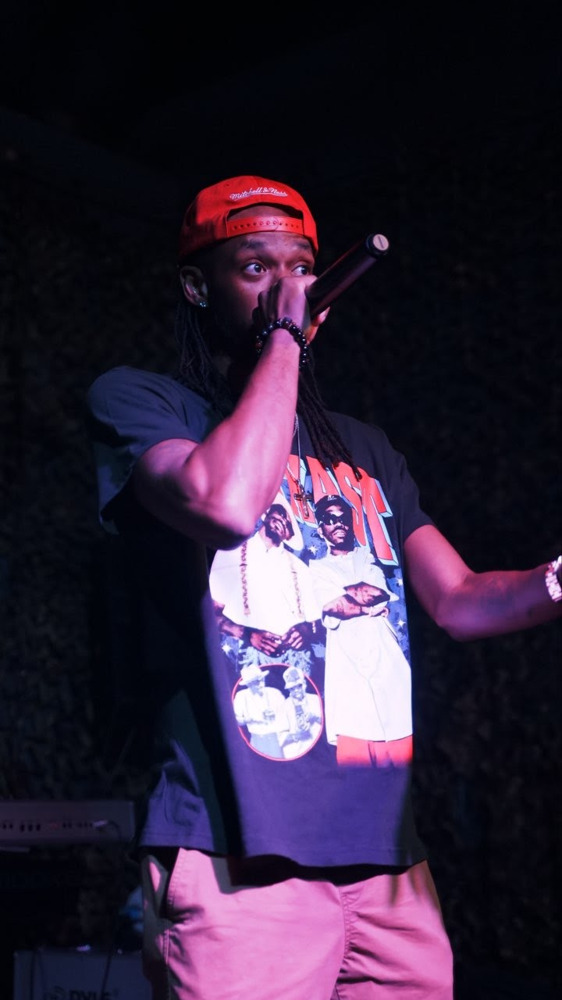

Meet Mondo
Mondo isn't just making tracks; he's architecting a movement. Blending razor-sharp lyricism with atmospheric, boundary-pushing production, he has quickly emerged as one of the most compelling voices in the modern hip-hop landscape.
Raised on a steady diet of golden-era boom-bap and futuristic trap, Mondo's sound acts as a bridge between generations. His intricate wordplay tackles themes of hustle, resilience, and the realities of the come-up, cutting through the noise of an overcrowded industry.
Following the underground success of his debut mixtape, which set the streets on fire and garnered millions of independent streams, Mondo has spent the last year locked in the studio. His upcoming project promises to elevate his storytelling to an entirely new echelon, proving that he is here for legacy, not just a moment.

Critical Acclaim
"Mondo delivers a masterclass in breath control and narrative focus.
He is exactly what the scene has been waiting for."
— Underground Hip-Hop Weekly